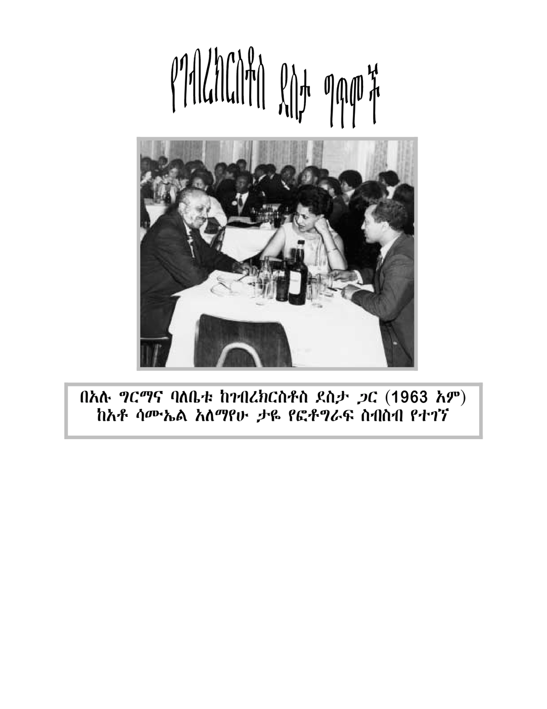

Poem
አንተ ነህ መስከረም
Ante Neh Meskerem
You Are Meskerem

ማላዬ በለዉ ፤ ድምቅ ሰማያዊ
ክፋት ያለዉ ጋሬ ተክጰድ ሃምራዊ
በዚያ ላይ ደሙፋ አንደጰተ ተሻድ
እስተፈራቆ ቢያንጋጠጠ ተቀጰር
እንተህህ መስከረም
የሃምሉን ጨላማ የሃለኔን ዝናም
የኀርክነዉ ኣንትህህ
በብርሃን ጨማሃህ
በክረምቱ ወራት ሰማይን ያሰመዉ
የማርያም መቅሰት በየለማ ያስደመ።
ጫለዉ ኀከከተአል መሬት ላይ ለ፳
በደ፳ ቬ፲ መሳኲ ተለያቶ
ወንዝኛ ጀላቱ ድንጋይና አፈረ
አገሩ ዉብ ሆንያል ዉዳዉ ፳ንትረራ
እንቀማጣሽ አንተ ስምታህ የበለሃ
ለሰዉ መታበቢያ ዉበት የ፳ትባሃ
በሸፍ መአሃህ ለዉጠዉ አመቚ
ይደደሰ ያረጀዉ ፍጥረት ሌላ ይሁን
ከምረዉ ዘመናን ኀበዉ ጣምት ጣምት
በጱ ሰደደ ፍጥረት ይትጱሀበት
ፍለሶት ይዘለሉ ቚመል ይበጥቦ
ከአስደሳዕነት ወሮች ይመሳሉ
ይሰቀዉት እሁልን
ይሰጋ በታቸዉን
ይበራስበት ሣኀን
ይሰባ ደሰ ሰበሙ ፺በኘ ይሪክ
ይጱመራ ኣበብች ይጱቀ ይክፈክ
አምሰናፍ ማገለ በሜዳዉ የዴ፳መ
ከበቶች ሣኀን ይጱመ
ሀግሳት ይናዉ ቃለቁ ይጱመ
ሄሮች ይትናሰሶ
የነፍሶ ጠርን . . .
ይሰጱዌ በቦታዉ ይዉደዉ ፤ አገካን።
አደይ አበባ ነህ የመሰቀል ጻመራ
ወረንዙ አላባይ ነህ አየረሃ የመሬ
ያገረ ልብህ አንተህ ነዎ እንደበረደ
ሰዉ የሚያረጱብህ ዋበባህን ወሰደ
በጱፍ ነህ እሸት ጉጱ፲¹ የሰበለ
አረጓጕድ አባባበ በጊዜ የተገለ
ጥቚር አረጋጕደ
ቢ.ሜ.ማ አረጓጕደ
ያትc አረጓጕደ
ቅመል አረጋጕደ . . . ቀለም ቀለም ቀለም
የሚስትካሀሀ የሚሰንክጱህ የለም።
In this collection
- 01ምንድን ነሽMindin Nesh
- 02የሳንባዎ ወና የልብ ጥፊሬYesanbawo Wena Yelib Tifire
- 03ይሽ ጊዜYish Gize
- 04ሰዉ ነው የረፈቀSew New Yerefek'e
- 05አንተ ነህ መስከረምAnte Neh Meskerem
- 06ቀረሽ እንደቀህQeresh Indeqeh
- 07የዘንባባ የምርት ምስልYezenbaba Yemirt Misl
- 08ኢ.ዮ.ሃ!I.Yo.Ha!